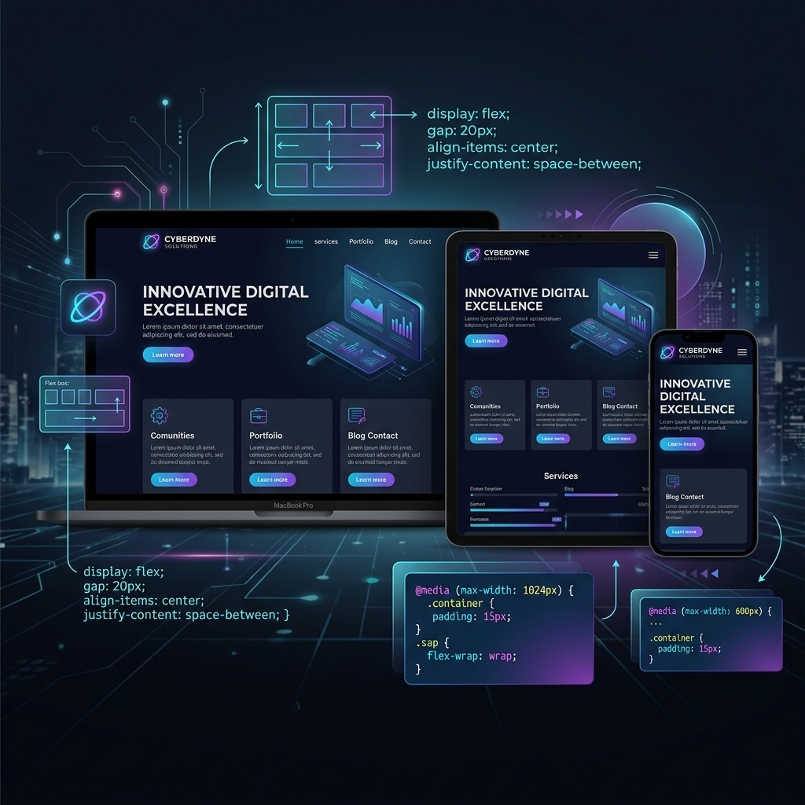

Menyusun Layout Responsif dengan CSS Modern

Saat ini, website diakses dari berbagai macam perangkat: HP, tablet, laptop, hingga monitor desktop ultra-wide. Oleh karena itu, menyusun tata letak (layout) yang fleksibel dan responsif adalah keharusan bagi setiap developer Front-end.
1. Menggunakan CSS Flexbox
Flexbox (Flexible Box Layout) sangat baik digunakan untuk mengatur tata letak satu dimensi (baik mendatar atau tegak). Dengan Flexbox, elemen anak dapat menyesuaikan ukurannya secara fleksibel sesuai dengan ruang kontainer induk.
2. CSS Grid untuk Layout Dua Dimensi
Jika Anda perlu menyusun tata letak dalam bentuk baris dan kolom sekaligus (seperti galeri foto atau grid portofolio), CSS Grid adalah alat yang terbaik. Anda bisa menggunakan rumus `repeat(auto-fit, minmax(...))` untuk membuat grid responsif tanpa media query.
3. Media Queries untuk Penyesuaian Presisi
Media Query memungkinkan kita menulis CSS khusus yang hanya aktif pada ukuran layar tertentu (breakpoint). Sebaiknya gunakan pendekatan Mobile-First (menulis gaya HP dulu, lalu menambahkan Media Query untuk layar yang lebih besar).
Kesimpulan
Kombinasi antara **Flexbox**, **Grid**, dan **Media Queries** adalah kunci untuk menghasilkan website yang responsif dan nyaman digunakan di segala perangkat. Selalu uji website Anda pada berbagai ukuran layar menggunakan inspect element browser saat melakukan proses pembangunan layout.